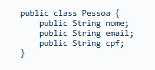
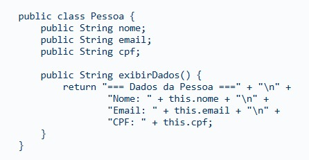
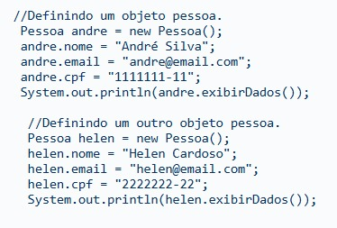
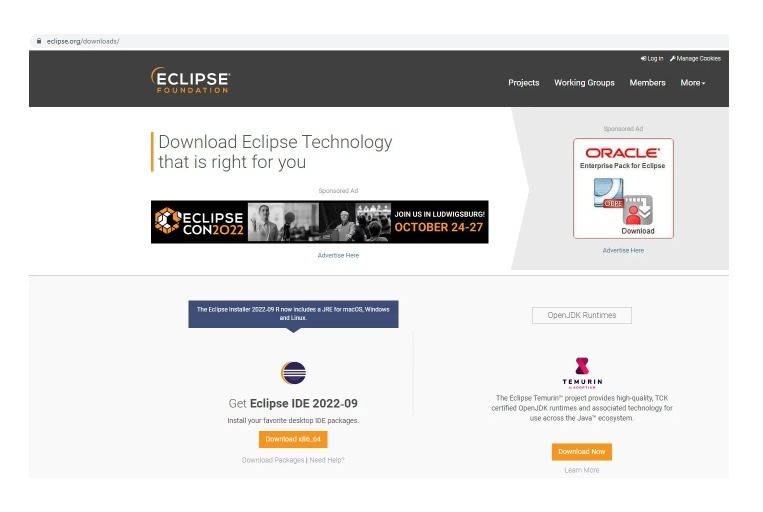
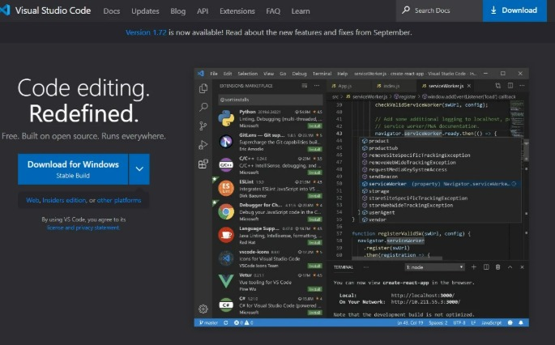

INTRODUÇÃO
O Java é uma das plataformas mais utilizadas para o desenvolvimento de aplicações ao redor do mundo.
Quem está iniciando com essa tecnologia pode encontrar alguma dificuldade para compreender a “quantidade de código” que é necessária para escrever uma mensagem como o famoso “Olá, mundo!”. Mas, não criemos pânico! O Java não é um bicho de 7 cabeças e com este resumo vou lhe mostrar isso!
O que é Java?
O Java, como plataforma de programação, nasceu no ano de 1995 dentro dos laboratórios da empresa Sun Microsystem como resultado de uma extensa pesquisa científica e tecnológica. A plataforma Java entrega um ambiente completo para o desenvolvimento e execução de programas, sendo composta por:
1. Uma linguagem de programação de alto nível orientada a objetos;
2. Máquina Virtual (Java Virtual Machine ou JVM), que garante independência de plataforma, pois o código executa na máquina virtual e essa pode ser portada para outras plataformas como Windows ou Linux;
3. Java Runtime Environment ou JRE, que agrega a máquina virtual e alguns recursos para a execução de aplicações Java;
4. e Java Development Kit ou JDK, que é um conjunto de utilitários que oferece suporte ao desenvolvimento de aplicações.
No Java, os programas são escritos em um arquivo com a extensão .java, que em um processo posterior serão compilados para arquivos com a extensão .class. Esses, por sua vez, contêm os códigos a serem executados na máquina virtual, os bytecodes.

A JVM está disponível para a maioria dos sistemas operacionais do mercado, sendo assim conseguimos rodar a mesma aplicação Java no Windows, macOS, Linux, Solaris, entre outros. Essa funcionalidade implementa um dos conceitos que nasceram forte com o Java:
“escreva uma vez e execute em qualquer lugar!”
Tecnologia Java
A plataforma Java é estruturada em um portfólio de produtos para desenvolvimento e execução de aplicações, idealizando que um mesmo programa possa funcionar em diferentes sistemas operacionais e dispositivos. Atualmente a plataforma está dividida em duas grandes áreas:
Java Standard Edition ou JavaSE
Java Enterprise Edition ou JavaEE
Java Standard Edition ou JavaSE
Componente padrão do Java que fornece um ambiente para o desenvolvimento de aplicações de pequeno e médio porte, além de um conjunto de APIs base da plataforma e a JVM padrão.
Java Enterprise Edition ou JavaEE
Componente baseado no JavaSE, é focado no desenvolvimento de aplicações empresariais multicamadas de grande porte e provê serviços adicionais, ferramentas e APIs para simplificar a criação de aplicações complexas.
Java é lento? JIT e otimizações na Java Virtual Machine #AluraMaisO Java é gratuito?
Desde o seu lançamento oficial em 1996 até as suas mais recentes versões, o Java sofreu evoluções e melhorias que o permitiram se manter como uma plataforma e linguagem competitiva, o que explica sua grande popularidade.
Mas uma dúvida muito comum, principalmente para quem está iniciando, é a seguinte: o Java é gratuito? Uma pergunta pertinente, uma vez que a gigante de tecnologia Oracle comprou a Sun e a plataforma Java.
A resposta para essa pergunta encontramos no site da Oracle. O Java é gratuito para estudo e testes, porém, para uso comercial e suporte você deverá desembolsar um valor para licenciamentos. Mas, e agora?
Kit de Ferramentas Java: OpenJDK
Hoje existe também uma versão totalmente gratuita do Java e de suas ferramentas que é mantida pela comunidade, contando também com o apoio da Oracle. Trata-se do OpenJDK, que é o kit de ferramentas para o desenvolvimento Java. Ele existe desde 2006, porém, desde a compra do Java pela Oracle, o kit passou a ganhar ainda mais força.
Qual a diferença entre o Java Oracle e o OpenJDK?
Mas, então, existe diferença? O Java Oracle é desenvolvido com base no código oficial do projeto Open e permite uso completo e comercial, sendo diferenciado pelo suporte e a forma de licenciamento, mas tecnicamente ambas as versões são o mesmo Java.
Para saber mais sobre os custos do Java Oracle acesse: a página da Oracle
Saiba Mais: Java, Oracle e Cloud:
Java, Oracle e CloudComo utilizar a Plataforma Java
O Java como plataforma de computação é muito utilizado, pois existe um grande número de aplicações para computador, sites e aplicativos que dependem do Java para funcionar. Por isso, é muito comum a pergunta: “Eu preciso do Java no meu computador?”.
Para executar as aplicações Java no nosso computador é necessária a instalação do ambiente de execução do Java ou JRE. Ela é uma camada de aplicação e é instalada no sistema operacional, fornecendo a biblioteca de classes e os recursos necessários para a execução do código Java pela JVM.
Como exemplo de aplicações que precisam do Java para funcionar, temos o aplicativo do Imposto de Renda de Pessoa Física (IRPF), utilizado pelo Ministério da Fazenda do Brasil. Aliás, muitos aplicativos oficiais do governo brasileiro foram desenvolvidos com o Java, como os utilizados para a Declaração do Imposto de Renda Retido na Fonte (DIRF) e a Relação Anual de Informações Sociais (GDRAIS).
Para configurar o Java em seu computador, executar aplicativos e componentes criados em Java, você pode baixar a JRE na pagina oficial da plataforma e efetuar a instalação para o sistema operacional de sua escolha.
A Linguagem Java
O Java, como linguagem de programação, possui algumas características que o destacam das demais linguagens e lhe conferem a popularidade que tem hoje. Vamos elencar abaixo as principais:
1. independência de Plataforma;
2. Orientação da Objetos;
3. Não usa ponteiros;
4. Multithread;
5. Performance;
6. Segurança
Sintaxe da Linguagem Java
Que tal conhecer um pouco mais sobre a linguagem Java? Para isso, vamos falar um pouco sobre a sua sintaxe.
Para criarmos um programa, podemos dividir o nosso código fonte em diversos arquivos com extensão .java, também conhecidos como unidades de compilação. Usando um editor de códigos, vamos definir o código fonte em Java (.java) para exibir uma mensagem em console, que será compilada em um .class para ser interpretada pela nossa JVM.
Abaixo temos um exemplo de um código Java para exibir uma mensagem:

Para começar a escrever o código Java, é necessário utilizar um editor de texto para salvar pos arquivos .java e o JDK para realizar a compilação com o utilitário javac.
Para o código que exemplificamos acima, utilizamos o VS Code na plataforma Windows. Você pode conferir mais informações sobre como utilizar o Java no VS Code no nosso super artigo Desenvolvendo aplicações Java com VS Code.
Um fato importante do Java é que ela é uma linguagem case-sensitive, ou seja, ela faz uma distinção entre letras minúsculas e maiúsculas, como em classe e Classe. Ela também é uma linguagem definida como fortemente tipada, então, na utilização de variáveis e objetos, devemos fornecer um tipo para ele.
Por exemplo: queremos definir um espaço na memória que iremos nomear como “valor”, sendo que esse recebe 100, que é do tipo inteiro, então escreveremos da seguinte forma:

Na linguagem Java, temos os tipos de dados primitivos (o mesmo que existe em outras linguagens), apresentados de forma sucinta na tabela abaixo, e os tipos complexos (classes), que são definidos por nós.
| CATEGORIA | TIPO |
|---|---|
| Inteiro | byte, short, int, long |
| Real | float, double |
| Caracter | char |
| Lógica | boolean |
Os tipos complexos, as chamadas classes, são aqueles tipos criados pela pessoa programadora para a resolução de algum problema e que irão representar alguma ideia ou conceito do mundo real, que são a base do paradigma de programação orientada a objetos.
Para se aprofundar sobre a sintaxe do Java e entender mais fundamentos da linguagem, recomendo que você acesse:
Java e Orientação a Objetos
A Orientação a Objetos é um paradigma de programação, mas, afinal, o que isso quer dizer? Um paradigma é um modelo ou estilo de programação que aplicamos na criação de um software.
Nesse modelo de programação, a ideia é aproximar os conceitos e ideias do mundo real - traduzindo, por exemplo, um carro, uma pessoa ou mesmo uma conta bancária para o mundo virtual - e fazer com que esses conceitos na forma de objetos de software consigam se comunicar e interagir para executar uma funcionalidade para um sistema.
Esse paradigma nasceu em 1960, na Noruega, com a proposta da criação de sistemas mais confiáveis, flexíveis e de fácil manutenção. Na década seguinte, em 1970, o matemático, biólogo e desenvolvedor Alan Kay criou a primeira linguagem de programação a implementar esse paradigma, o SmallTalk.
Apesar de ter nascido a tanto tempo, foi com o Java que esse modelo de programação ganhou popularidade e passou a ser adotado em larga escala pela "indústria” de softwares; e aqui existe uma retroalimentação, pois a popularidade do Java também está muito atrelada ao fato da linguagem adotar esse paradigma.
Dentre as principais vantagens da adoção da Orientação a Objetos, além de minimizar a curva de aprendizagem, também temos a capacidade de reutilização, que otimiza a produção de uma solução de software, possibilitando maior qualidade, redução de tempo e custo de manutenção de sistemas.
Classes e Objetos
Na Orientação a Objetos, temos dois conceitos essenciais, que são:
Classes;
Objetos.
Classes
no mundo real, podemos identificar e classificar diversos objetos que compartilham um conjunto de características em comum. Por exemplo, um livro é um conceito que pode representar vários objetos com características compartilhadas, como capa, autor, número de páginas, ISBN, entre outros; assim, diante de objetos que têm em comum esse conjunto de características, conseguimos classificá-los como livros, certo?
O que é Classe na Orientação a Objetos?
Por definição, uma classe serve como um modelo, uma “planta”, um desenho por meio do qual objetos serão criados. No Java, podemos definir uma classe como mostrado na codificação abaixo:

Em uma classe, além das características (propriedades) comuns aos objetos, temos também os comportamentos que aquele objeto pode executar. Veja um exemplo:

Então, para a utilização de objetos precisamos definir as classes, por isso alguns defendem que poderíamos chamar de “Programação Orientada a Classes”, o que daria muito certo também!
Objetos
Um objeto é criado a partir da definição de uma classe. Ele representa uma instância específica de um objeto existente em um conjunto de objetos.
O que é Objeto na Orientação a Objetos?
Os objetos são essenciais na Programação Orientada a Objetos, pois serão eles que irão interagir e executar as funcionalidades do sistema. Então, tomando como exemplo a definição da classe Pessoa, do exemplo acima, para representar um único objeto do conjunto “pessoas” no Java, escrevemos da seguinte forma:

Note que no exemplo definimos dois objetos do tipo Pessoa e ambos possuem as mesmas propriedades: nome, email e cpf, mas cada um possui um conjunto de dados que os tornam diferentes.
Orientação a Objetos com Roberta ArcoverdeSe aprofundando em Programação Orientada a Objetos
Práticas de Orientação a ObjetosFerramentas
Para começar a desenvolver as suas aplicações usando a plataforma Java, o que não pode faltar é o nosso querido JDK e um editor de texto - isso mesmo, um bloco de notas ou similares.
Mas graças aos deuses da programação, temos uma série de ferramentas, algumas gratuitas e outras proprietárias, que atendem às nossas necessidades. Vamos listar aqui algumas das mais utilizadas no mundo Java, as famosas IDEs (Integrated Development Environment).
Com uma IDE podemos editar o código, acessar um terminal, executar um script , debugar e compilar usando um único ambiente, o que pode potencializar a produtividade no desenvolvimento de aplicações. Abaixo, trazemos algumas IDEs e editores que podemos usar para o Java.
Eclipse
O Eclipse é uma IDE para Java de código aberto e gratuito. Ela agrupa uma série de ferramentas e utilitários para apoiar o desenvolvimento, muito associada ao Java desde a sua criação. Hoje a IDE já permite a sua utilização para programar usando linguagens como JavaScript, PHP, entre outras.

Créditos: Eclipse Foundation
Baixar o Eclipse
Para baixar a IDE, você pode acessar a página da Eclipse Foundation, localizando a aba Eclipse IDE Download.
VS Code
O Visual Studio Code é o editor de códigos abertos da Microsoft, também disponível para Mac e Linux, e que, por meio da configuração de alguns plugins, pode ser utilizado para escrever seus primeiros códigos em Java.
Possui suporte para várias linguagens, uma interface agradável e é simples de usar, além de ser uma ferramenta muito leve em comparação a uma IDE tradicional.

Créditos: Visual Studio Code
Baixar o Visual Studio Code
Para baixar o VS Code, você pode acessar a Página Oficial da ferramenta. Recomendamos também a leitura do artigo Desenvolvendo aplicações Java com o VS Code, que apresenta a configuração de alguns plugins para Java no Visual Studio Code.
Certificações
Para começar uma carreira em programação, o essencial é a vontade e a dedicação em aprender cada vez mais. Para muitas vagas de trabalho, uma formação “formal'' não é um requisito eliminatório, mas é sempre bom podermos, quando possível, procurar alguma forma de instrução.
Hoje temos à disposição uma série de formas de aprender e praticar programação, desde a realização de cursos livres, até a graduação e a pós graduação. Mas na área de tecnologia temos as certificações, onde empresas como Microsoft, IBM, Google e Oracle oferecem a possibilidade de uma certificação técnica em determinadas tecnologias, em geral, mantidas por essas empresas.
Uma certificação também serve como um sinal que você, enquanto profissional, estudou e valida seus conhecimentos em determinada tecnologia, o que ajuda a incrementar o seu currículo, tendo em vista que algumas vagas podem exigir como um dos requisitos determinada certificação. Mas, e no universo Java?
Conclusão
O Java, enquanto plataforma e uma linguagem de programação, já se encontra consolidado, possuindo umas das maiores e mais ativas comunidades dentro da tecnologia. Hoje, temos a plataforma Java rodando nos mais diversos dispositivos de smartphones, computadores e Internet das Coisas.
Por ter iniciado como uma tecnologia aberta, que implementa e utiliza o conceito de máquinas virtuais e o paradigma de programação orientada a objetos, a plataforma ganhou uma extraordinária popularidade, estando presente inclusive em projetos governamentais ao redor do mundo.
Quer se aprofundar ainda mais na tecnologia? Deixamos aqui algumas referências que serão de grande ajuda: